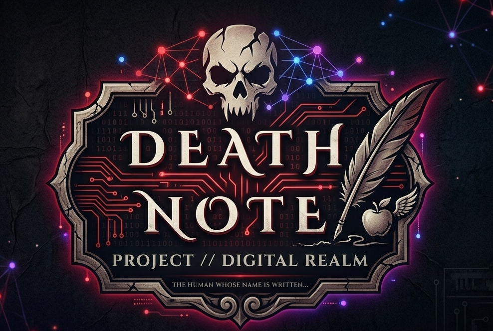

An interactive, high-fidelity web experiment that translates the psychological tension and supernatural aura of the Death Note universe into a cutting-edge frontend experience.
The goal was to move past traditional flat portfolio architectures and build an aggressive, experiential design model. By utilizing cinematic asset animations, hardware shader effects, and biometric simulation logic, this project builds high-tension engagement directly within user browser terminals.
It maximizes user immersion by transitioning through psychological checkpoints, mirroring the tension of the legendary series.
High-contrast, low-vignette graphic frameworks constructed to preserve classic narrative aesthetics.
Procedural hardware breakdown algorithms mirroring digital degradation and system resets cleanly.